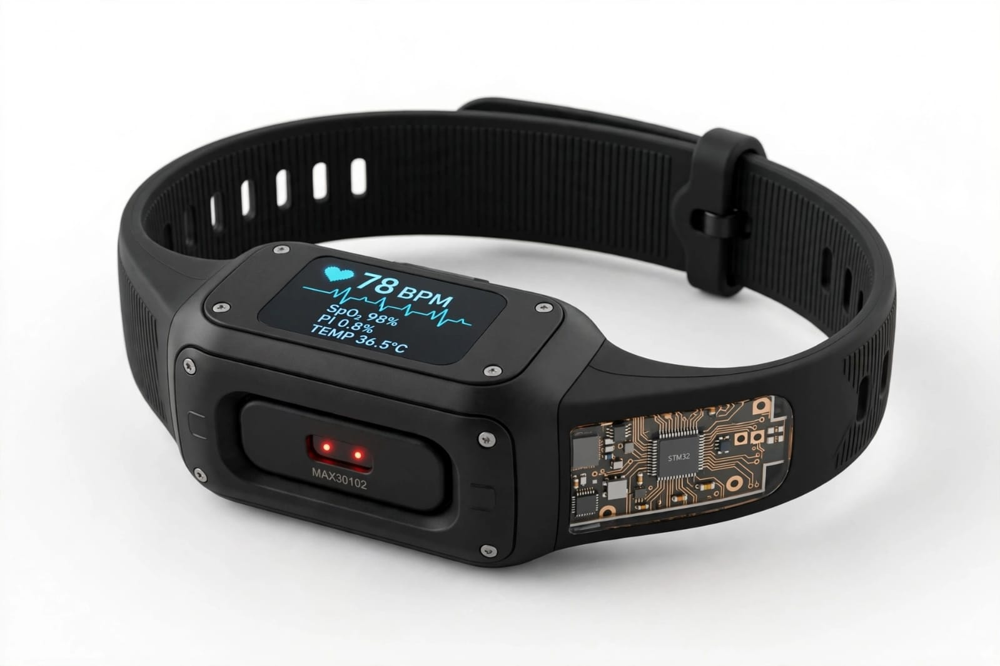
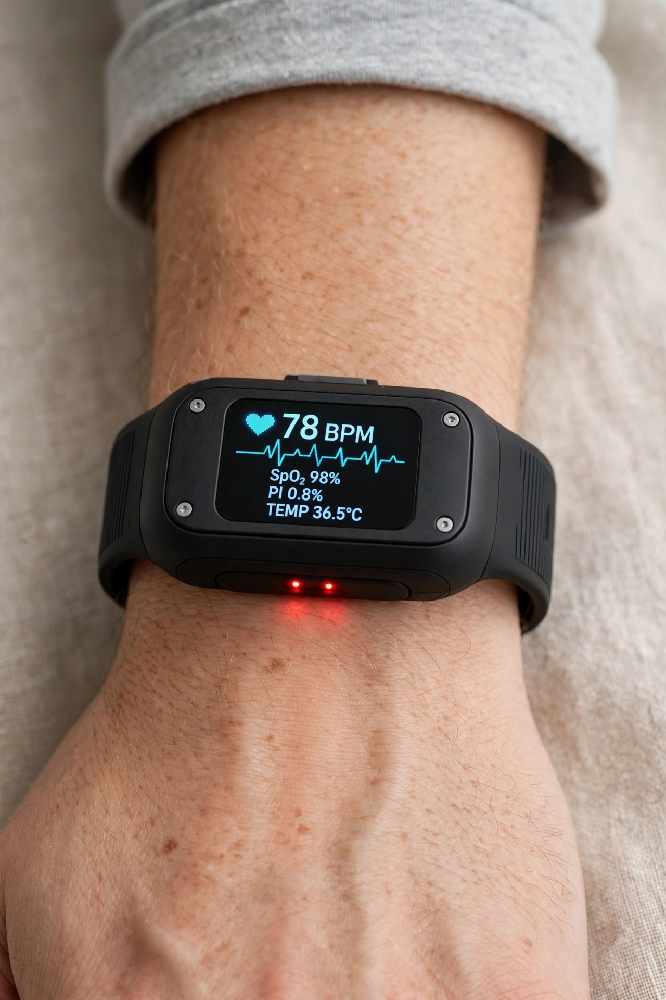

A segurança que você veste.
A vida que você protege.
A revolução em forma de pulseira...
Guardião Pessoal 24h
Em emergências médicas silenciosas, como crises decorrentes da Síndrome Vasovagal, cada segundo de atraso pode ser fatal. A reatividade mata; a proatividade salva.
O Vitta Safe integra sensores de alta precisão no pulso para monitorar sinais vitais em tempo real, oferecendo segurança absoluta para quem vive sozinho ou possui condições de risco.


Tecnologia Preditiva
Diferente de relógios comuns, o Vitta Safe te avisa antes de você perder a consciência:
- Análise avançada de queda brusca de pressão e oxigenação.
- Alerta vibratório imediato no pulso ao detectar oscilações de risco.
- Instruções de segurança e rotas de socorro exibidas na tela.
O Nosso Diferencial
Não somos apenas um relógio que mostra números. Somos um sistema de segurança autônomo que fecha o ciclo de cuidado desde o primeiro sinal pré-crise até a chegada do resgate.
Público-Alvo
Design minimalista que não estigmatiza o usuário:
- Pessoas com Síndrome Vasovagal e propensão a desmaios.
- Pacientes com condições crônicas ou pós-cirúrgicos.
- Pessoas que moram sozinhas e buscam tranquilidade.
- Idosos que valorizam a independência assistida.